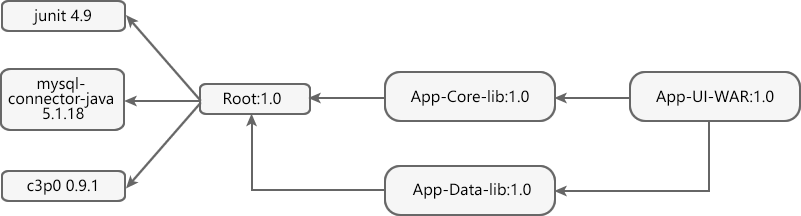

Maven继承
Maven 在设计时，借鉴了 Java 面向对象中的继承思想，提出了 POM 继承思想。
当一个项目包含多个模块时，可以在该项目中再创建一个父模块，并在其 POM 中声明依赖，其他模块的 POM 可通过继承父模块的 POM 来获得对相关依赖的声明。对于父模块而言，其目的是为了消除子模块 POM 中的重复配置，其中不包含有任何实际代码，因此父模块 POM 的打包类型（packaging）必须是 pom。
如图 1 所示，一个项目中存在如下多个模块。
如上图所示：
在父模块 Root 的 pom.xml 中，其打包类型（packaging）为 pom，并声明了 3 个依赖：junit 4.9、mysql-connector-java 5.1.18 以及 c3p0 0.9.1 。
在子模块 App-Core-lib 和 App-Data-lib 的 pom.xml 中，使用 parent 元素声明父模块，其子元素如下表：
子模块的 POM 中，当前模块的 groupId 和 version 元素可以省略，但这并不意味着当前模块没有 groupId 和 version，子模块会隐式的从父模块中继承这两个元素，即由父模块控制子模块的公司组织 id 以及版本，这样可以简化 POM 的配置。
下面我们需要用到一个插件：maven-dependency-plugin，它可以帮助我们分析项目依赖，其插件目标 dependency:list 能够列出项目最终解析到的依赖列表，dependency:tree 能够进一步的描绘项目依赖树。
1. 打开命令行窗口，跳转到子模块 App-Core-lib 的目录下，执行以下命令，查看该模块依赖列表。
命令执行结果如下。
Maven 可通过继承获得 POM 元素，如下表。
当一个项目包含多个模块时，可以在该项目中再创建一个父模块，并在其 POM 中声明依赖，其他模块的 POM 可通过继承父模块的 POM 来获得对相关依赖的声明。对于父模块而言，其目的是为了消除子模块 POM 中的重复配置，其中不包含有任何实际代码，因此父模块 POM 的打包类型（packaging）必须是 pom。
如图 1 所示，一个项目中存在如下多个模块。

图1：多模块项目各模块关系图
如上图所示：
- App-UI-WAR 依赖于 App-Core-lib 和 App-Data-lib。
- Root 是 App-Core-lib 和 App-Data-lib 的父模块。
- Root 在它的依赖部分定义了 junit 4.9、mysql-connector-java 5.1.18 以及 c3p0 0.9.1 作为其依赖。
App-UI-WAR 的 pom.xml 配置如下。
<project xmlns="http://maven.apache.org/POM/4.0.0"
xmlns:xsi="http://www.w3.org/2001/XMLSchema-instance"
xsi:schemaLocation="http://maven.apache.org/POM/4.0.0 https://maven.apache.org/xsd/maven-4.0.0.xsd">
<modelVersion>4.0.0</modelVersion>
<groupId>net.biancheng.www</groupId>
<artifactId>App-UI-WAR</artifactId>
<version>1.0</version>
<dependencies>
<!-- 依赖 App-Core-lib-->
<dependency>
<groupId>net.biancheng.www</groupId>
<artifactId>App-Core-lib</artifactId>
<version>1.0</version>
</dependency>
<!-- 依赖 App-Data-lib-->
<dependency>
<groupId>net.biancheng.www</groupId>
<artifactId>App-Data-lib</artifactId>
<version>1.0</version>
</dependency>
</dependencies>
</project>
父模块 POM 配置
父模块 Root 的 pom.xml 配置如下。
<project xmlns="http://maven.apache.org/POM/4.0.0"
xmlns:xsi="http://www.w3.org/2001/XMLSchema-instance"
xsi:schemaLocation="http://maven.apache.org/POM/4.0.0 https://maven.apache.org/xsd/maven-4.0.0.xsd">
<modelVersion>4.0.0</modelVersion>
<groupId>net.biancheng.www</groupId>
<artifactId>Root</artifactId>
<version>1.0</version>
<!--定义的父类 POM 打包类型使pom -->
<packaging>pom</packaging>
<dependencies>
<dependency>
<groupId>junit</groupId>
<artifactId>junit</artifactId>
<version>4.9</version>
<scope>test</scope>
</dependency>
<dependency>
<groupId>mysql</groupId>
<artifactId>mysql-connector-java</artifactId>
<version>5.1.18</version>
<scope>runtime</scope>
</dependency>
<dependency>
<groupId>c3p0</groupId>
<artifactId>c3p0</artifactId>
<version>0.9.1</version>
</dependency>
</dependencies>
</project>
在父模块 Root 的 pom.xml 中，其打包类型（packaging）为 pom，并声明了 3 个依赖：junit 4.9、mysql-connector-java 5.1.18 以及 c3p0 0.9.1 。
子模块 POM 配置
App-Core-lib 的 pom.xml 配置如下。
<project xmlns="http://maven.apache.org/POM/4.0.0"
xmlns:xsi="http://www.w3.org/2001/XMLSchema-instance"
xsi:schemaLocation="http://maven.apache.org/POM/4.0.0 https://maven.apache.org/xsd/maven-4.0.0.xsd">
<modelVersion>4.0.0</modelVersion>
<groupId>net.biancheng.www</groupId>
<artifactId>App-Core-lib</artifactId>
<version>1.0</version>
<parent>
<groupId>net.biancheng.www</groupId>
<artifactId>Root</artifactId>
<version>1.0</version>
<relativePath>../Root</relativePath>
</parent>
<dependencies>
<dependency>
<groupId>log4j</groupId>
<artifactId>log4j</artifactId>
<version>1.2.17</version>
</dependency>
</dependencies>
</project>
App-Data-lib 的 pom.xml 配置如下。
<project xmlns="http://maven.apache.org/POM/4.0.0"
xmlns:xsi="http://www.w3.org/2001/XMLSchema-instance"
xsi:schemaLocation="http://maven.apache.org/POM/4.0.0 https://maven.apache.org/xsd/maven-4.0.0.xsd">
<modelVersion>4.0.0</modelVersion>
<groupId>net.biancheng.www</groupId>
<artifactId>App-Data-lib</artifactId>
<version>1.0</version>
<parent>
<groupId>net.biancheng.www</groupId>
<artifactId>Root</artifactId>
<version>1.0</version>
<!-- <relativePath>../Root</relativePath> -->
</parent>
</project>
在子模块 App-Core-lib 和 App-Data-lib 的 pom.xml 中，使用 parent 元素声明父模块，其子元素如下表：
| 元素 | 描述 | 是否必需 |
|---|---|---|
| groupId | 父模块的项目组 id。 | 是 |
| artifactId | 父模块 id。 | 是 |
| version | 父模块版本。 | 是 |
| relativePath |
父模块 POM 的相对路径，默认值为 ../pom.xml。 项目构建时，Maven 会先根据 relativePath 查找父模块 POM，如果找不到，再从本地仓库或远程仓库中查找。 |
否 |
子模块的 POM 中，当前模块的 groupId 和 version 元素可以省略，但这并不意味着当前模块没有 groupId 和 version，子模块会隐式的从父模块中继承这两个元素，即由父模块控制子模块的公司组织 id 以及版本，这样可以简化 POM 的配置。
查看继承依赖项
在 App-Core-lib 和 App-Data-lib 两个子模块的 pom.xml 中，只有 App-Core-lib 声明了一个依赖： log4j 1.2.17。那么如何验证子模块是否继承了父模块 POM 中声明的依赖项呢？下面我们需要用到一个插件：maven-dependency-plugin，它可以帮助我们分析项目依赖，其插件目标 dependency:list 能够列出项目最终解析到的依赖列表，dependency:tree 能够进一步的描绘项目依赖树。
1. 打开命令行窗口，跳转到子模块 App-Core-lib 的目录下，执行以下命令，查看该模块依赖列表。
mvn dependency:list
命令执行结果如下。
[INFO] Scanning for projects... [INFO] [INFO] -------------------< net.biancheng.www:App-Core-lib >------------------- [INFO] Building App-Core-lib 1.0 [INFO] --------------------------------[ jar ]--------------------------------- [INFO] [INFO] --- maven-dependency-plugin:2.8:list (default-cli) @ App-Core-lib --- [INFO] [INFO] The following files have been resolved: [INFO] junit:junit:jar:4.9:compile [INFO] log4j:log4j:jar:1.2.17:compile [INFO] c3p0:c3p0:jar:0.9.1:compile [INFO] mysql:mysql-connector-java:jar:5.1.18:runtime [INFO] org.hamcrest:hamcrest-core:jar:1.1:compile [INFO] [INFO] ------------------------------------------------------------------------ [INFO] BUILD SUCCESS [INFO] ------------------------------------------------------------------------ [INFO] Total time: 0.921 s [INFO] Finished at: 2021-04-14T15:09:18+08:00 [INFO] ------------------------------------------------------------------------
可以看到，App-Core-lib 有 5 个依赖项，其中 junit 4.9、mysql-connector-java 5.1.18 以及 c3p0 0.9.1 是从父模块 Root 中继承的；log4j 1.2.17 是该模块本身的 POM 中声明的；hamcrest 1.1 是 junit 4.9 传递下来的依赖项。
2. 在命令行窗口中，跳转到子模块 App-Data-lib 的目录下，执行以下命令，查看该模块依赖列表。
mvn dependency:list
命令执行结果如下。
[INFO] Scanning for projects... [INFO] [INFO] -------------------< net.biancheng.www:App-Data-lib >------------------- [INFO] Building App-Data-lib 1.0 [INFO] --------------------------------[ jar ]--------------------------------- [INFO] [INFO] --- maven-dependency-plugin:2.8:list (default-cli) @ App-Data-lib --- [INFO] [INFO] The following files have been resolved: [INFO] junit:junit:jar:4.9:compile [INFO] c3p0:c3p0:jar:0.9.1:compile [INFO] mysql:mysql-connector-java:jar:5.1.18:runtime [INFO] org.hamcrest:hamcrest-core:jar:1.1:compile [INFO] [INFO] ------------------------------------------------------------------------ [INFO] BUILD SUCCESS [INFO] ------------------------------------------------------------------------ [INFO] Total time: 0.938 s [INFO] Finished at: 2021-04-14T15:37:28+08:00 [INFO] ------------------------------------------------------------------------
可以看到，App-Data-lib 有 4 个依赖项，其中 junit 4.9、mysql-connector-java 5.1.18 以及 c3p0 0.9.1 是从父模块 Root 中继承的；hamcrest 1.1 是 junit 4.9 传递下来的依赖项。
可继承的 POM 元素
在上面的例子中，我们可以看出 groupId、version 以及项目的依赖配置 dependencies 是可以被继承的，除了这 3 个元素之外，还有哪些元素可以被继承呢？Maven 可通过继承获得 POM 元素，如下表。
| 元素 | 描述 |
|---|---|
| groupId | 项目组 ID，项目坐标的核心元素 |
| version | 项目版本，项目坐标的核心元素 |
| description | 项目的描述信息 |
| organization | 项目的组织信息 |
| inceptionYear | 项目的创始年份 |
| url | 项目的URL地址 |
| developers | 项目的开发者信息 |
| contributors | 项目的贡献者信息 |
| distributionManagement | 项目的部署配置 |
| issueManagement | 项目的缺陷跟踪系统信息 |
| ciManagement | 项目的持续集成系统信息 |
| scm | 项目的版本控制系统信息 |
| mailingLists | 项目的邮件列表信息 |
| properties | 自定义的Maven属性 |
| dependencies | 项目的依赖配置 |
| dependencyManagement | 项目的依赖管理配置 |
| repositories | 项目的仓库配置 |
| build | 包括项目的源码目录配置、输出目录配置、插件配置、插件管理配置等 |
| reporting | 包括项目的报告输出目录配置、报告插件配置等 |
关注公众号「站长严长生」，在手机上阅读所有教程，随时随地都能学习。内含一款搜索神器，免费下载全网书籍和视频。

微信扫码关注公众号